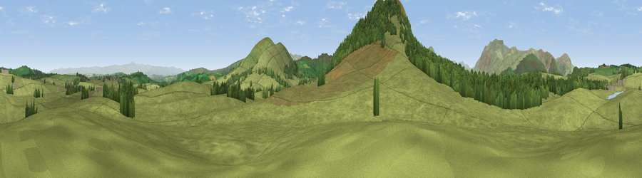

Brownhow Hill
#18817 in England · top 75% of its area beats it · near TroutbeckThe view, rendered

A 360° render of this exact spot computed from the terrain model, tree cover and land cover — summer colours, afternoon light, calibrated against photographs of famous viewpoints. Real trees, hedges and buildings will differ in detail.
The panorama
Grey silhouette: terrain skyline in each direction (720 bearings, Earth curvature and refraction included). Dashed green: skyline with trees (+15 m) and buildings (+8 m) as obstacles. Blue strip: how far the ground is visible on each bearing.
Where the view opens
Wedge length = distance to the farthest visible ground on that bearing (vegetation-aware). Rings at 10, 25 and 50 km.
What fills the view
87% grassland · 12% woodland
Angular shares of the visible panorama (visual magnitude), not map area. Landscape diversity 0.18 (0–1 Shannon).
Key numbers
More beautiful places nearby
The staircase of upgrades: each row has a higher view potential than everything closer. Driving times are estimates from straight-line distance, calibrated against real road routing — check an actual route before setting out.
| Place | Direction | Drive | Score |
|---|---|---|---|
| Great Mell Fell | SW · 2 km | ~5 min | 78.6 |
| Viewpoint near Watermillock | SSE · 3 km | ~7 min | 79.0 |
| Viewpoint near Mungrisdale | NW · 8 km | ~15 min | 79.2 |
| Viewpoint near Watermillock | SE · 8 km | ~16 min | 83.5 |
| Viewpoint near Legburthwaite | SSW · 13 km | ~24 min | 83.8 |
| Viewpoint near Legburthwaite | SW · 13 km | ~24 min | 84.5 |
| Skiddaw South Top | W · 15 km | ~27 min | 85.8 |
| Viewpoint near Applethwaite | W · 15 km | ~28 min | 86.7 |
54.63082, -2.91817 · source: osm peak · position refined by local search. Computed location — check access rights before visiting.